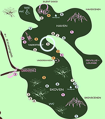

Bryggen
Igen i år finder du Bryggen Thisted på årets Alive. Vi står klar til at servere lækker mad for dig under hele festivalen. Vi kigger på sæsonen, de lokale råvarer og laver mad med rene, naturlige og ægte ingredienser. Nogle af dem er økologiske, men det vigtigste for os er, at det vi køber, produceres af mennesker, der holder af kvalitet. Ligesom os.
Besøg vores hjemmesideMenu
Allergener
- Gluten:
Alle vores produkter er glutenfri, men kan indeholde spor af gluten - Laktose:
Alle vores produkter er laktosefri - Nødder:
Vores produkter kan indeholde spor af nødder
